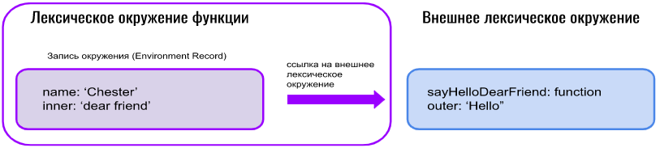
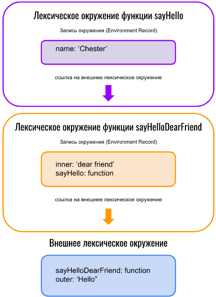

Лексическое окружение
Никто не знает, как рассказать про лексическое окружение (ЛО), даже если слышал такой термин. Тут и пошутить не о чем.
Официальная спецификация ES6 определяет этот термин так:
Lexical Environment — это тип спецификации, используемый для разрешения имён идентификаторов при поиске конкретных переменных и функций на основе лексической структуры вложенности кода ECMAScript. Лексическое окружение (Lexical Environment) состоит из записи среды и, возможно, нулевой ссылки на внешнюю лексическую среду.
Сложно + не понятно, как запомнить = плохо. Давайте попроще.
Технически ЛО представляет собой объект с двумя свойствами:
Внимание! Это служебный объект, и получить к нему доступ напрямую мы никак не можем.
Глобальное лексическое окружение хранит объявление переменных и функций, которые были созданы в глобальном контексте выполнения. Ссылка же на внешнее ЛО у него равна null (потому что нет ничего «более глобального»).
Рассмотрим пример выполнения функции:
let outer = 'Hello';
function sayHelloDearFriend(name) {
let inner = 'dear friend'
console.log(`${outer}, ${inner}, ${name}!` )
}
sayHelloDearFriend('Chester');
Как выглядит лексическое окружение функции sayHelloDearFriend:

Итак, лексическое окружение функции состоит из записи окружения, в которой хранятся как переменные, созданные внутри этой функции, так и параметры, пришедшие при вызове функции. Кстати, это явно указывает на то, что лексическое окружение будет при каждом вызове функции создаваться заново, так как функция может быть вызвана с разными входными параметрами. Таким образом, мы можем при работе функции получить доступ к name и inner, не выходя за пределы записи окружения самой функции, но вот переменную outer там найти не сможем. Настало время ссылки на внешнее окружение. С её помощью мы можем получить внешнее лексическое окружение и уже оттуда достать переменную outer.
Маленький бонус. На иллюстрации видно, что декларация функции находится во внешнем окружении функции. Здесь, думаю, не надо ничего объяснять, зато сразу становится понятно, как мы найдём функцию, если будем работать с рекурсией. При вызове функции внутри самой себя мы найдем её, пройдя по ссылке во внешнее лексическое окружение.
На иллюстрации показан простой пример с функцией, созданной сразу в глобальном контексте, так что у её внешнего лексического окружения ссылка на внешнее окружение равна null. Давайте усложним.
let outer = 'Hello';
function sayHelloDearFriend() {
let inner = 'dear friend'
return function sayHello(name) {
console.log(`${outer}, ${inner}, ${name}!` )
}
}
let say = sayHelloDearFriend();
say('Chester')
Вот так вот мы всё усложнили.
А теперь распишем всё в порядке следования:

Таким образом, по ссылке на внешнее окружение мы можем получить окружение «отца», за ним по его ссылке ― «окружение деда», потом «прадеда» и так далее, пока не дойдём до глобального окружения.
Глобальное ЛО существует на всем протяжении жизни скрипта, а вот лексические окружения функции уничтожаются по мере выполнения функции, так как при последующем её вызове будет создано новое окружение. Нет смысла хранить старое, надо освобождать место в памяти (если ваш шкаф забит, то нужно выкинуть старые вещи, чтоб поместились новые).
HOISTING (всплытие переменных)
Даже те, кто знает про всплытие, часто заблуждаются. Происходит это в основном, когда отвечают на вопрос про различия let и var (какой казалось бы, простой и сложный одновременно вопрос), о котором говорилось уже в рамках рассказа про области видимости. И вот оно, заблуждение: «var поднимаются, а let ― нет».
А теперь, собственно, о поднятии.
Откуда оно взялось? Всё достаточно банально и просто, если прочесть предыдущую главу. В момент создания глобального лексического окружения декларация функций и переменных уже попадает в него, а оно происходит перед непосредственно выполнением. С одной стороны, очень удобно иметь возможность вызвать функцию выше по коду, чем она была задекларирована. Так как у js сильный функциональный уклон, это здорово выручает, с другой стороны - получаем вот такие вещи:
console.log(a);
var a;
Вывод в консоль:
> undefined
И тут уже один java-разработчик (ну или любой другой бэкендер, который решил «вырасту ― фулстеком буду»), решивший изучить JavaScript, бросает эту идею и идет рассказывать всем, какой JavaScript ужасный язык и «как только люди на нём пишут».
Однако разработчики JavaScript признали свою оплошность и порадовали всех новыми способами создания переменных let, который добавили в es6. С ним уже не забалуешь.
console.log(a);
let a;
Вывод в консоль:
> ReferenceError: a is not defined
Вот так хорошо. Так правильно. И тут же сделали вывод, что значит let не всплывает. Так и будем всем говорить. Но давайте обратимся к самому официальному источнику. Согласно 13ECMAScript Language: Statements and Declarations (ссылку прилагаю).
The variables are created when their containing Lexical Environment is instantiated but may not be accessed in any way until the variable’s LexicalBinding is evaluated.
Что означает, что они всё так же всплывают, но, учитывая ошибки прошлого, разработчики сделали так, что доступ к ним не может быть получен, пока не присвоено какое-либо значение, что произойдёт только когда по коду мы дойдём до этого присвоения и не раньше. А если какая-то функция вызвана раньше, то такое присвоение произойти не успело, а значит, будет ошибка.
И отсюда сразу вопрос: тогда получается, в данной ситуации тоже будет error?
let a;
console.log(a);
a = 2;
Вроде как привязка значения идет ниже по коду? Но нет, не всё так просто. Тут будет undefined, потому что конструкция let a считается идентичной конструкции let a = undefined.
Маленькое лирическое отступление.
Раз уж затронули тему отличия let от var, то необходимо упорядочить и перечислить всё.
var a = 1
var a = 2
console.log(a)
Вывод в консоль:
> 2
А если так:
let b = 1
let b = 2
console.log(b)
Вывод в консоль:
> Uncaught SyntaxError: Identifier 'b' has already been declared